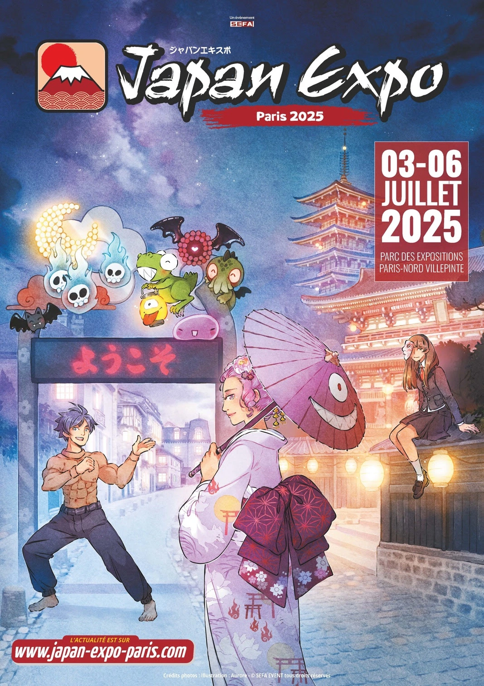
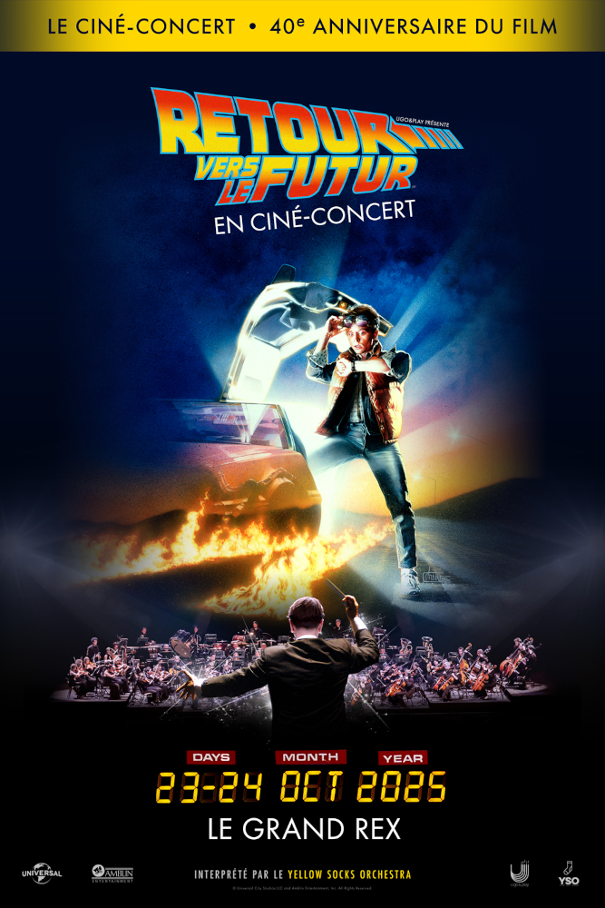
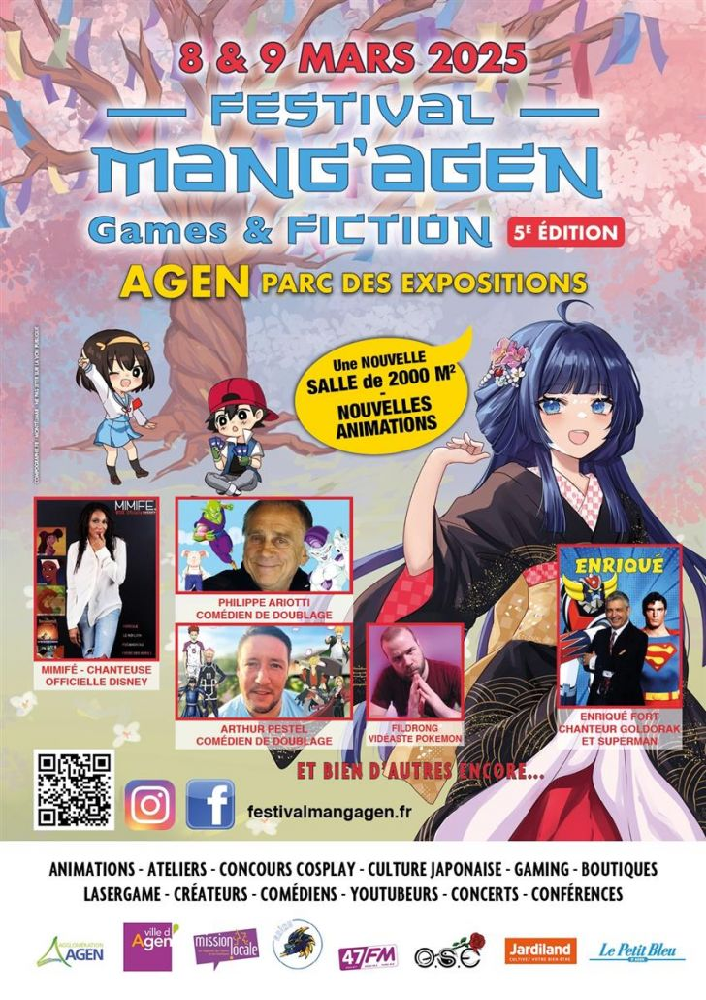

Festival
Le festival de cinéma dédié aux mangas et animes met en avant les chefs-d'œuvre de l'animation japonaise, des classiques aux nouveautés. Il propose des projections, des avant-premières et des rencontres avec des professionnels du milieu. Entre expositions, conférences et ateliers, cet événement offre une immersion unique dans l'univers de l'anime.

concert
Les concerts sont des événements musicaux où artistes et groupes se produisent en direct devant un public. Ils peuvent avoir lieu dans des salles, en plein air ou lors de festivals, offrant une expérience unique et immersive. Chaque concert crée une ambiance spéciale grâce à la musique, aux lumières et à l'énergie des spectateurs.

exposition
Les expositions sont des événements culturels où sont présentées des œuvres d'art, des objets historiques ou des créations artistiques. Elles permettent aux visiteurs de découvrir et d'explorer différents univers, qu'il s'agisse de peinture, de photographie, de science ou de design. Chaque exposition offre une expérience unique, mêlant découverte, apprentissage et émerveillement.